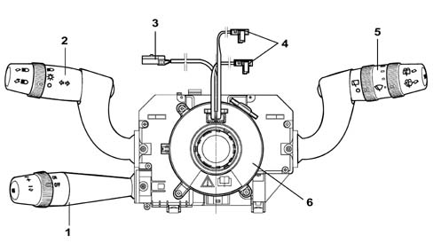
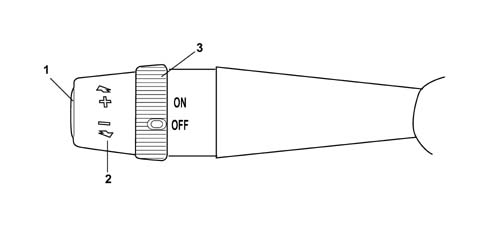

5580A cruise control system
- Path
- Descriptions > 55 ELECTRICAL EQUIPMENT > 5580 SPECIAL ACCESSORIES > 5580A cruise control system
- Kind
- system description
- Applies to
- all engines; all production periods
- Interactive page
- https://sloeber94.github.io/elrnDB-lYpsln/en/#/2427448
Applies to: all engines; all production periods
OPERATION
The engine managment systems for petrol engines with motorized throttles and diesel engines with electronically controlled injection times include the Cruise Control function, i.e. a system which automatically maintains the cruising speed set by the driver.
The Cruise Control is integrated in the steering column switch unit which also controls the direction indicators and front/rear window wiper.
The figure shows the location of the Cruise Control.

1 - Cruise Control lever 2 - Lights/direction indicators lever 3 - Horn/radio controls cable 4 - Air Bag connectors 5 - Front/rear wiper control lever 6 - Clock spring
Applies to: all engines; all production periods
OPERATION
The third lever on the steering column switch incorporates the Cruise Control commands, namely:
- a ring switch for activating/deactivating the system;
- 2 - lever with the function of memorizing the vehicle speed increase/decrease;
- a Resume button for recalling the memorised speed.

1 - Resume button for recalling speed memorized 2 - Steering column switch unit lever with the function of memorizing the vehicle speed increase/decrease; 3 - Ring switch (ON: Cruise activated; OFF: Cruise deactivated)
Applies to: all engines; all production periods
OPERATION
Six-way connector pin out
Pin | Operation |
|---|---|
relay | Resume command positive signal |
relay | Supply controlled by the ignition |
3 | N.C. |
4 | Cruise control engagement positive signal (on) |
5 | Deceleration positive signal (-) |
6 | Acceleration positive signal (+) |
The electronic system is managed by the engine management unit. It automatically maintains the cruising speed set by the user by means of the direct control of the engine electronic management.
Applies to: all engines; all production periods
MEMORISATION OF THE PRESELECTED SPEED
To activate the Cruise Control function, it is necessary to:
- 1 - activate the bistable ring switch in the ON position;
- 2 - bring the car up to the desired speed; remember that the Cruise Control can only be activated for speeds of over 30 km/h. It is advisable to switch it on in fourth gear or upwards, and on road conditions which allow the set speed to be maintained safely.
- 3 - push the steering column switch unit lever upwards to increase the speed : the lever returns automatically (UNSTABLE).
- 4 - release the accelerator pedal and allow the system to act directly;
- 5 the instrument panel will light up the warning light in fixed mode in accordance with the signal coming from the fuel injection control unit via the CAN network, indicating the Cruise Control operating status. When it goes out, this indicates the deactivation of the system.
Applies to: all engines; all production periods
VARIATION OF THE MEMORISED SPEED
Proceed as follows to change the stored speed:
(A) Speed increase:
- push the lever upwards: an acceleration ramp is produced at a constant gradient which can be programmed;
- on release of the lever (automatic return), the system maintains and memorises the new speed reached by the car.
(B) Speed reduction
- push the lever downwards: the car speed is reduced in relation to that set previously by the Cruise Control; release the lever and the system will maintain the new speed reached by the car.
The Cruise Control can operate in the entire permitted engine speed range.
Applies to: all engines; all production periods
FUNCTION OF RESUME BUTTON
This function enables the car to be restored to the last speed value memorised, by pressing a button, if the Cruise Control has been switched off because of particular conditions (e.g. operation of the clutch or use of the stop switch during braking).
Applies to: all engines; all production periods
CRUISE CONTROL DEACTIVATION
(A) The Cruise Control is deactivated by the user by:
- turning the ring switch to the OFF position
- switching off the engine;
- operating the brake or clutch pedal (in these cases the last speed reached remains memorised, and can be recalled by pressing the Resume button).
- vehicle speed below the permitted minimum (about 30 km/h) or above the permitted maximum; - if the lever is operated without using the clutch, the rpm and car speed will not be consistent; in all these cases, pressing the Resume button re-activates the system.
- operating the accelerator with Cruise Control active: by pressing the accelerator (e.g. for overtaking) the Cruise Control permits a temporary increase in the car speed because it is temporarily deactivated, but as soon as the action on the accelerator pedal ceases, the system reactivates the memorised speed setting.
For safety reasons, the ASR (Antislip Regulation) and VDC (Vehicle Dynamic Control) functions have priority over the Cruise Control; when the operation of the ASR/VDC is over, the Cruise Control is automatically reactivated at the last speed value memorised.
(B) The Cruise Control is automatically deactivated if:
- acceleration higher than the set limit occurs (e.g. a rapid descent);
- deceleration higher than the set limit occurs (e.g. the gear selector lever is used without the clutch).
However, the system switches off automatically when the signals used by the Cruise software are incorrect because they are attributable to faults in the components;
- vehicle speed sensor;
- accelerator pedal potentiometer;
- brake switch plausibility
- plausibility of clutch switch;
- plausibility of Cruise switch and Resume button;
- plausibility of Cruise switch and speed increase or decrease lever positions;
The Cruise Control system is also deactivated in all cases where errors occur on components which impair engine operation, such as:
- engine management control unit;
- engine rpm sensor;
- electronic throttle body actuators/sensors (petrol engines);
- engine load meter (petrol engines);
- coils (petrol engines);
- fuel injectors;
- high-pressure system components (diesel engines);